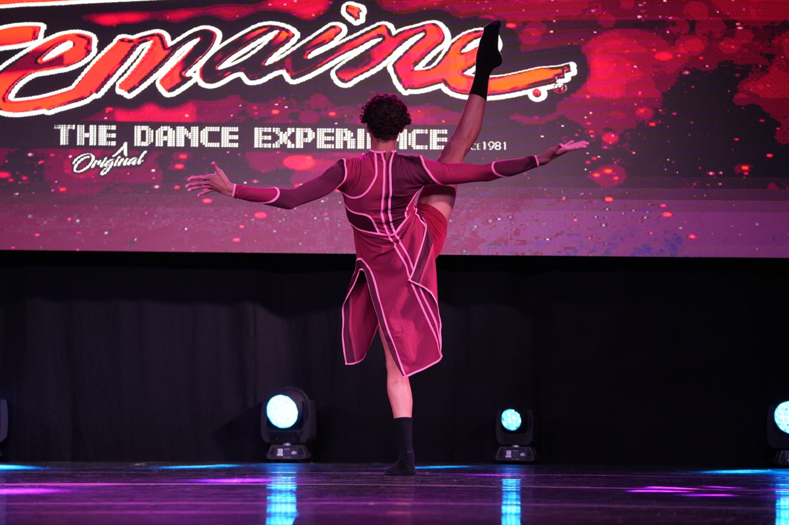

Dancer · Choreographer · Orlando, FL

About
Contemporary at heart. Fluent in everything else.
John Nuzzi is a dancer and choreographer from Orlando, Florida. He trained for five seasons at Celebration Arts Academy, where he took Grand Champion titles in solos and groups and earned the program's 5-Year Legacy Award, "The Architect."
Today he dances on the Pro track of DWD ProSeries under Dixon Bowles, and he assists in class, coaching the younger dancers. He makes his own work too: this season's solo is his own choreography.
- Training
- DWD ProSeries, Pro track
- Class of
- 2027
- Styles
- Contemporary, lyrical, jazz, hip hop, tap
- Also
- Choreographer, class assistant
Featured work
Three solos, five years apart.
Awards
The shelf so far.
- TITANIUM, Grand Champion 12+ SolosPrelude in C# Minor
- Grand ChampionHeart of Gold, at every competition that season
- Grand Champion, GroupsChurch, Inferno
- The All-Around AwardDWD ProSeries Summer Intensive 2026, chosen by the full faculty
- "The Architect," 5-Year Legacy AwardCelebration Arts Academy
- Dance Awards Scholarship2025-26 season
- National Opening Number invitation2025-26 season
- 1st Place, NationalsHope
- 2nd of 147, NationalsContact
- Mr. TitlePoseable
- 1st OverallMultiple pieces and competitions
- IDA AwardAgony, Ammore
- Grand Champion Runner-UpAura, Kingdom and more
- Crystal DiamondMultiple solos
- Groove PerfectionMultiple seasons
- Choreography AwardsMultiple pieces
- Convention Scholarship2022-23 season
Class of 2027. Here's the map.
Colleges, auditions, scholarships, companies and jobs, with real deadlines from the source, all in one place.